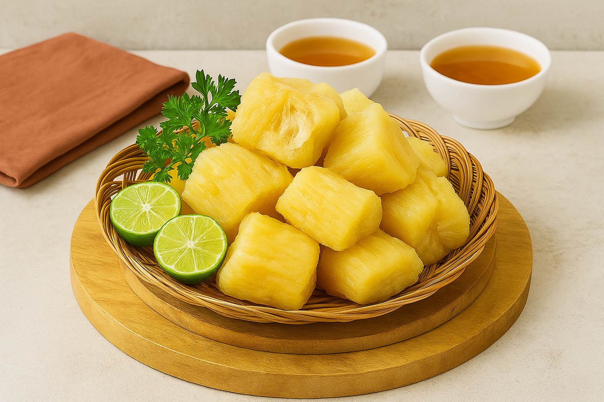

Selamat datang di website resep makanan
Let Her Cook!
Aplikasi Resep Masakan Sunda
Rindu Masakan Halaman rumah, atau ingin mencoba masakan Khas sunda? Temukan Resepnya Disini! 😋

Cari
Tampilkan Resep Favorit
Tampilkan Semua Resep
Kategori
Semua Kategori
Sarapan
Makan Siang
Makan Malam
Dessert
Asal Masakan
Semua Asal
Masakan Bandung
Masakan Cianjur
Nutrisi
Semua Nutrisi
Rendah Kalori
Tinggi Protein